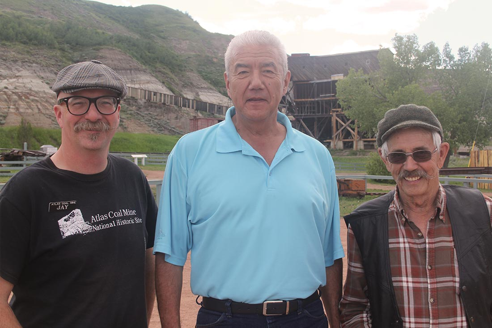
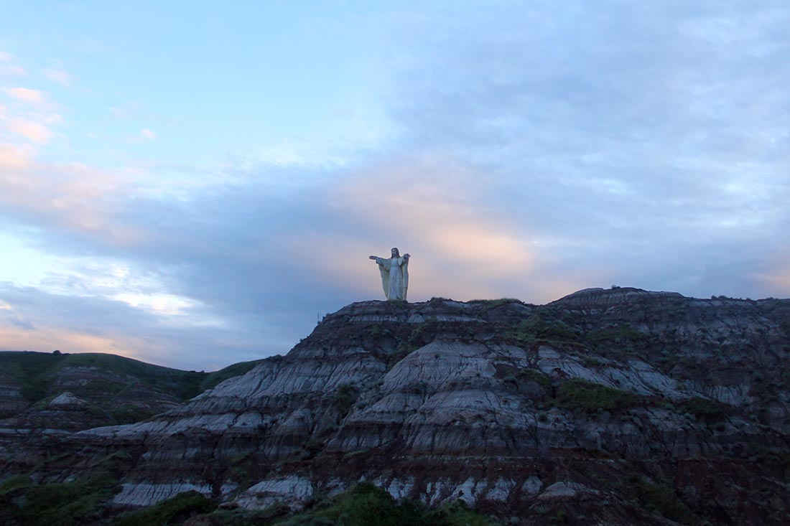
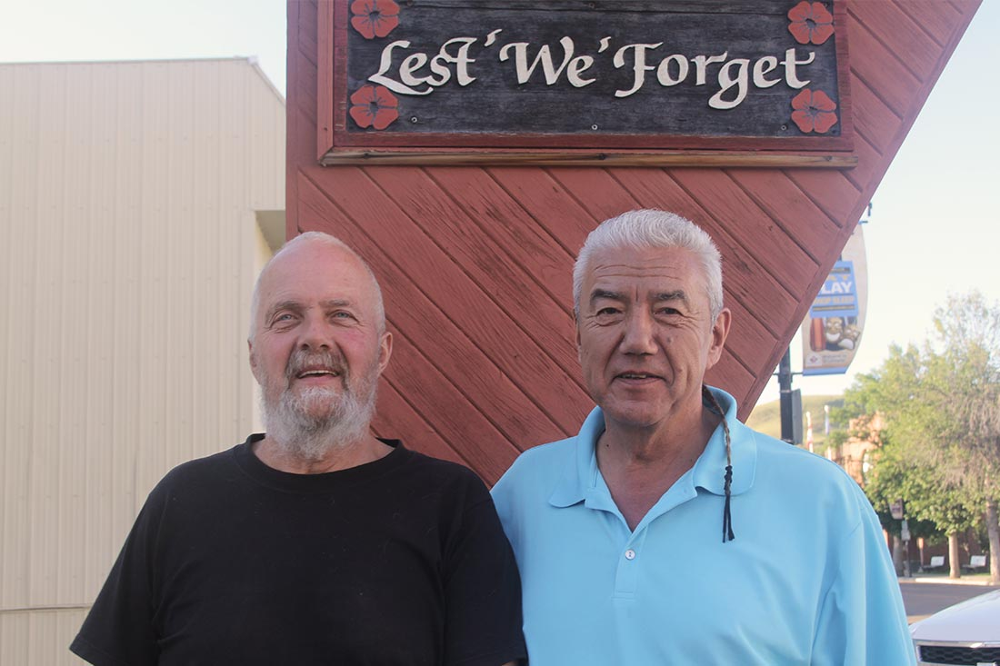
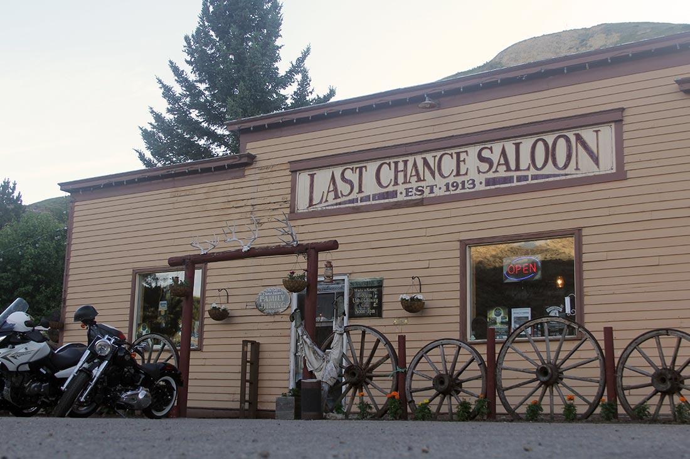
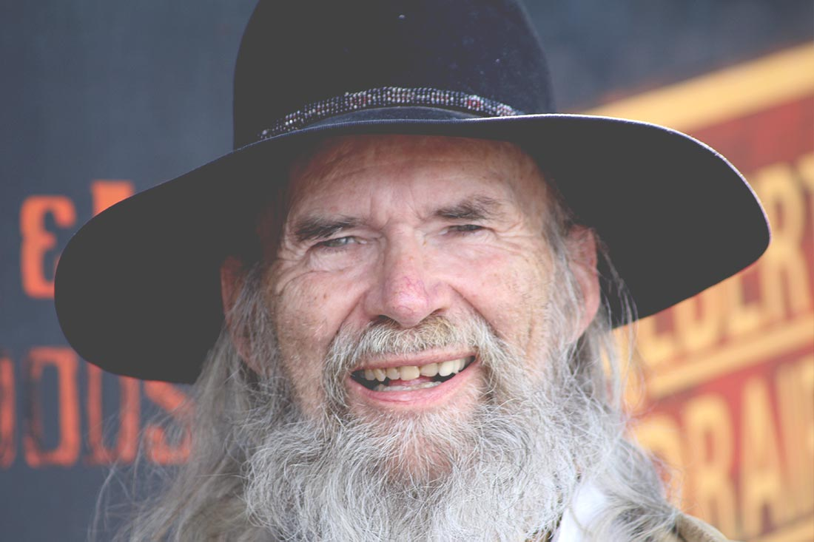

DRUMHELLER & STETTLER
June 17 & 18, 2016
SCROLL TO EXPLORE
SCROLL TO EXPLORE
Drumheller is a place, I’m told, you need to visit, to experience the world of the Dino…This is a soil steeped in a dry climate that holds in its calloused hand, the awe of the Dinosaur. The Tyrrell Museum is the vault that houses live images of a billion years…the lab that puts the pieces of the timeless jigsaw puzzle on the tablet, and with patience and extraordinary care, recreates missing links in the chain of time. 
I’m not the only - I know it has been done. But I am now dancing to the music of Dino rock. Maybe I’m a little old for it. But hey, I’m dancing with a 115 million year old Armored Dino.
I was the first to touch one Dino in 5 years! The rock here is evil hard. (You may have heard some evil rock from these parts.)
There is a never-ending sense of mystery…what we see is only a sliver of time…this is magic!
Some of the people here at the museum only go home from work because they have to.
I have to admit the living water fossils are a bit weird for me. Animals with no backbones…not plants.
- Tom

In East Coulee, there is one living relic. A coal mine. Bob is the historian who protects the history of the coal mine. He says that coal was discovered here before the Dinos were discovered. Bob’s family was here, underground, in 1911. “It’s the mine that brought the Dinos”, he says with pride. “There were 35 mines in this valley before the Dinos showed up.” Bob was born in the valley, third generation underground, left in ‘60 and came back in 93’. I asked why he returned. “The history!” He came back with his friend Ray. I asked Ray why he came. “The stories!”
The mine sites displayed a red light in dangerous or unmanageable working conditions. When the light was off there was work. When the light was on there was no work. Subsequently, (so I’m told) there was another industry that would occupy the men when the Red light was on. Bob was the Uber of the day. When the Red light was on, Bob was a transport company.
Working underground can be precarious. When the men checked in they passed through the lamp shack and were given a lamp and a copper badge. The lamp shack was the lifeline. At the end of day, it was always a priority to check that all copper badges were back in their designated spots. If not, there was a life search.
There was always music. Gramps played fiddle; Aunt – piano; Uncle – drums; and Bob - bag pipes and accordion.
There were three mining communities here - Drumheller, East Coulee and Wayne.
I asked Bob if he had any regrets. He said, “I regret when they amalgamated the three school districts into one school because my girlfriends all got to know each other.”- Tom

Are you are looking for value? Come to the Drum! Come to The Passion Play…transport time and place from Galilee (the year 0 to Drumheller year 2016). You will find value here. If you’re looking for your spiritual self, come to a place where were you can find it. You might really want to be part of a story! The Greatest story ever told, on the greatest stage ever built, with one of the largest casts for theater ever assembled. Come to the Drum!
The pages of The Bible will unfold, if your spirit is wanting. You’ll want to see this. “The Passion Play”. - Tom

At the Drumheller Legion I met Kevin - a man’s man born into a grand family. Born and bred into this community. Admittedly not perfect, he has a character built on the pride of determination and guttural history that celebrates the depth of soul, tenacity, and roots of his family. He is a peace officer who first worked 35 years in the mine, and is now a retired guard from the penitentiary. In a moment of strength he states, “I am as much a free man as the prisoners are. Maybe this is limbo? I have no reason to go anywhere.”
Smiling, he continues, “I’m thrilled with the landscape and I come home to the stars!”- Tom

There is a haunted hotel in a place Called Wayne (Pop 29-30). The Rosedeer-Hotel/The Last Chance Saloon. I didn’t meet a lot of people there but the ones I met were wonderful and unique unto themselves…some discovering a new life, some reliving an old life, and some just living life. All in all, a common space providing comfort that followed the spirit of its hosts - present and past. The Cook has been at The Last Chance for a year. “I nibble but I don’t bite…nibble, nibble, it’s all the same! I came here last year and I’m still here, so it must be great”
I stayed in the awesome Rosedeer-Hotel! I slept with the lights on… - Tom

Stettler is a community tucked under a comfy quilt of innocence. I went to a gathering where my first encounter was with a welcoming young man. In the politest of ways he looked at me for a second or two. With what turned out to be a surprise for both of us he said, “You’re old!” It seemed like I had just taken one on the chin. “You’re right”, was my not so nimble response. I felt like I had suddenly disappeared. He could tell and gave me a big hug. However, looking back now, I cherish the paranoia of obsolescence. You know why? Because as I walked around, I began to feel like maybe I was just winded. It was really the essence of where I was that took my breath away. I was reappearing in a place in time that captures the higher ground of the past…
I met Mayor Dick Richards and when I asked, “why Stettler?”, he replied, “I tried other places. I couldn’t wait to leave and then I couldn’t wait to come back! Do you like Switzerland? I hope so because there are roots of Switzerland here. I hope my kids get to know what I know. This is a great place to grow up. My kids are gone all day but I know where they are. They could be at Buffalo Lake, the Summer Village, or maybe the world-class golf course. With great pride it is stated that the kids, culture and charity is the backbone of where we come from.”
My comfort was a sense that Stettler doesn’t change much but creates change. I believe art is the greatest instrument of change in the history of mankind. Stettler is an incubator for art – singers, writers, wood-workers, and theatre.
Oh yes, theatre and plenty of it. There is the traditional stage, and a stage on steel rails. People come here to ride the 1926 Steam Train to Big Valley and back. If you thirst for adventure, get ready for a good one. Meet Gabriel Dumont from the late 1800s. Meet the master of train songs and perhaps quench your thirst with some local Sarsaparilla. Be prepared to offer your spare change to the bank-robbing train gang. (I think they took a cue from Robin Hood because they give to the poor). Enjoy the feast in Big Valley before heading back for a well deserved nap at the end of day.
Well now that I have reappeared, it’s time to go back home…I will go back a better person today by coming to Stettler…lots of big hugs…- Tom
THE LOCATION:
PEOPLE + PLACES:
TOWN OF DRUMHELLER →
ATLAS COAL MINE →
LAST CHANCE SALOON →
TOWN OF STETTLER →
Explore other locations :